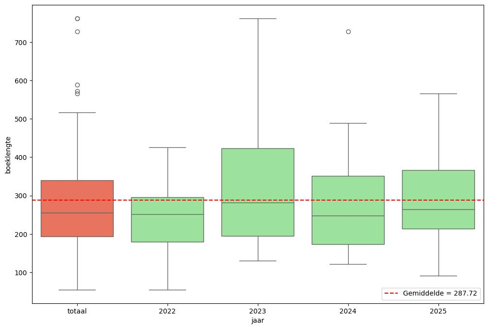
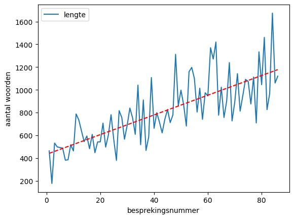
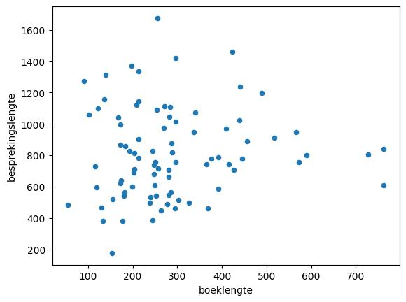
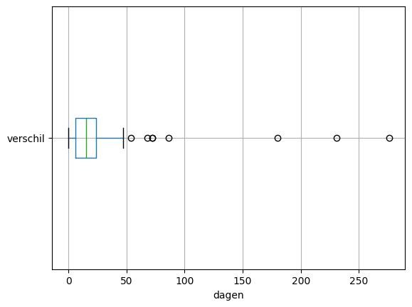
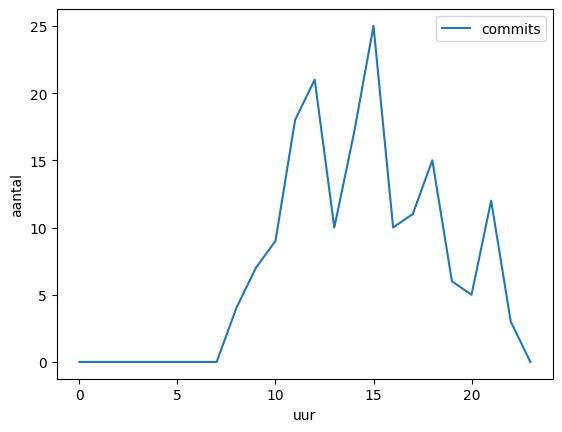
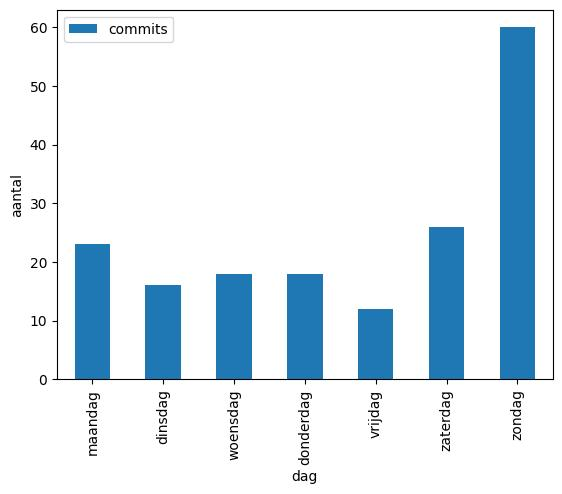

Sinds 2022 schrijf ik kleine (en soms iets uitgebreidere) besprekingen van de boeken die ik lees. In die tijd zijn er behoorlijk wat verslagen verschenen, en het leek me leuk daar ook een statistische beschrijving van te geven. Omdat dit best een klusje is, en de data ook weer niet zo hard verandert, doe ik dit eens per jaar. De analyse hieronder beslaat de jaren 2022-2025.
In die tijd heb ik in totaal 85 boekenverslagen geschreven – eigenlijk van 86, maar ik heb in deze analyses mijn verslag van Het mooste van Ungaretti genegeerd, omdat ik verder ook geen verslagen van dichtbundels heb gemaakt (omdat dat ook een beetje onzin is, natuurlijk). Het eerste verlag gaat over Theopoëzie van Peter Sloterdijk, het laatste is van Fifth Sun van Camilla Townsend. De boeken zijn geschreven in het Nederlands (45 boeken), Engels (29 boeken), Duits (5 boeken), Frans (5 boeken) of Italiaans (1 boek – mental note: meer Italiaans lezen). Het dunste boek heeft 55 pagina's (Crisis! van Beatrice de Graaf), het dikste telt er 762 (Resonanz van Hartmut Rosa). Meer specifiek is de verdeling van de pagina's als volgt:

Het blijkt dat ik vooral in 2022 wat dikkere boeken las. Misschien als gevolg hiervan komt het dikste boek (dat van Hartmut Rosa) niet als uitbijter naar voren – de enige uitbijter per jaar die we hier zien betreft East of Eden van John Steinbeck.
In totaal tellen de verslagen 69.173 woorden. Het kortste verslag is het verslag van Elementaire deeltjes - fascisme (177 woorden), het langste is van Het continent zonder eigenschappen (1674 woorden), maar dat is een beetje flauw omdat ik daarin een beschrijving meeneem van al de bladwijzers die Sloterdijk in de geschiedenis van Europa legt. Als je dit werk er uit haalt, is het langste boekverslag dat van Vrij Spel van Richard Powers.
Wanneer je de lengte van de verslagen over de tijd plot, krijg je een aardig beeld:

Het is duidelijk dat ik steeds langer van stof word. Het is ook wel een beetje te begrijpen, omdat ik sinds 2024 elk boekverslag zijn eigen pagina geef. Tot die tijd was elk jaar gewoon één lang bestand, en dan is het wat onhandiger om lange boekverslagen te maken. Tevens heb ik sinds ongeveer diezelfde tijd de neiging om in het verslag een korte samenvatting van het besproken werk op te nemen.
Wanneer we de lengte van het boek vergelijken met de lengte van het verslag onstaat er een aardig en informatief beeld:

Blijkbaar heeft de lengte van het boek geen enkele invloed op de lengte van het boekverslag. De correlatie tussen deze twee is ook 0,07, dus feitelijk verwaarloosbaar – wat ook blijkt uit Figuur 3.
Soms is de tijd die er zit tussen het moment dat ik een boek heb uitgelezen en ik het verslag op de site heb toegevoegd vrij lang – soms gebeurt dit ook op dezelfde dag. Het langste dat het heeft geduurd is het verslag van Grenzen aan de gemeenschap van Helmut Plessner (267 dagen), wat te verklaren is doordat ik dat boek lange tijd had uitgeleend aan een goede vriend.
Grafisch ziet die verdeling er zo uit:

Vanzelfsprekend houdt ik de code van de verslagen ook bij via git, dus het is ook mogelijk (en leuk) om eens naar de commits te kijken. In totaal zijn er 163 commits gedaan: de eerste is van 23 augustus 2022 (nota bene) en de laatste van 28 december 2025.
De verdeling per uur ziet er als volgt uit:

Het is duidelijk dat ik vooral in de middag hieraan werk, en dan met name de latere middag. 's Nachts doe ik hier niks aan, wat logisch is, want dan ben ik aan het slapen. Een ander interessant beeld ontstaat wanneer we het aantal commits per dag checken:

Verreweg de meeste commits gebeuren op zondag, wat inhoudt dat ik meestal op verloren zondagmiddagen de boekverslagen uitwerk. Op vrijdag werk ik blijkbaar zelden aan dit project.